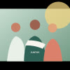

Acesso
Palavra em mãos
Distribuição gratuita de bíblias para pessoas em situação de vulnerabilidade.
Para quem: famílias e comunidades
Saiba mais Onde a palavra acontece
De norte a sul, caminhamos ao lado de iniciativas que fazem da fé uma prática de cuidado.
Nossas frentes
Escolha uma frente, compartilhe seu talento e ajude a levar essa missão ainda mais longe.
Distribuição gratuita de bíblias para pessoas em situação de vulnerabilidade.

Encontros de leitura e conversa que fortalecem vínculos e escuta.
Histórias, brincadeiras e literatura para despertar o gosto pela leitura.
Parcerias com organizações que já conhecem e cuidam do seu território.
Campanhas sazonais para distribuir kits de cuidado, leitura e acolhimento.
Conteúdos e encontros online para manter a comunidade sempre conectada.
Impacto alcançado
Medimos o que fazemos para cuidar melhor do que ainda precisa ser feito. Nosso impacto é construído com presença, parceria e prestação de contas.
Faça parte